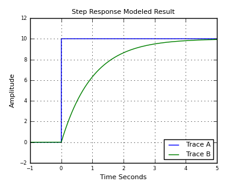

| Home | | Downloads | | Share This Page |
A Java biquadratic filter designer
— P. Lutus — Message Page —
Copyright © 2011, P. Lutus
This is BiQuadDesigner version 1.1 (03-24-2011)
The Applet | Introduction | The Basics(double-click any word to see its definition)
This is a live BiQuadDesigner session. A full explanation appears below.
The BasicsThere are times when language fails us, when direct experience and insight aren't adequately represented by the words we use. For example, it is said (inaccurately) that the Inuit people have 20 words for our word "snow". It's also said (accurately) that people have at least 100 words for "drunk". Which brings us to our topic — the everyday word "filter," the most commonly applied term for this article's topic, just doesn't convey sufficient meaning.
In the present context, "filter" (verb) means to apply a technical method to select something, usually on the basis of frequency, and "filter" (noun) refers to such a method. By this reasoning, radio and TV receivers are all examples of specialized filters, our ears are sophisticated biological Fourier filters, and musical taste, granted that it has no universally agreed measure, might stand as a more abstract example.
We begin our topic by describing the most basic kinds of filters, explain their operation using examples, and gradually progress to a very practical embodiment called a "biquadratic" that is easy to implement and use.
The Biquadratic FilterPresent-day software-based filtering methods have their roots in older analog electronic designs, and filter design represents just one example of a fundamental change in electronic technology, a technology that began with analog designs, moved to integrated-circuit-based digital equivalents, and has finally arrived at pure algorithm-based designs. Another way to say it: filters were once conceived using mathematical equations and then realized in analog circuits, but at present, the mathematical equation is the filter — writing an appropriate equation begins and ends the process in one step, in some cases even if that equation has no closed-form solution.
Here's an example that models the simplest kind of filter — a resistor and capacitor arranged as a low-pass filter:
 In the early days of electronics, one would analyze an RC circuit from first principles:
- The instantaneous current flowing in this simple circuit is proportional to the voltage across the resistor (
I=ER , Ohm's Law).- The rate at which the capacitor's voltage changes is also proportional to current.
- At time zero, the voltage across the capacitor is zero, therefore the resistor's voltage, and the circuit's current, are at a maximum.
- As time passes, the voltage across the capacitor increases, which causes the resistor's voltage to decline. This means the circuit's current declines, which causes the capacitor's rate of change in voltage to decline.
- Another way to say this: the rate at which the capacitor's voltage approaches the source voltage declines in step with the remaining voltage difference between the capacitor and the source.
This relationship can be expressed as a differential equation. For an unknown function f(t) representing the voltage across the resistor as a function of time:
- First term: the resistor voltage at time zero is equal to v:
(1)f(0)=v - Second term: the sum of the function and its first derivative (multiplied by the resistance and capacitance values) equals zero:
(2)f(t)+rcf′(t)=0 - (The second term says that the capacitor's rate of change is proportional to circuit current.)
The above differential equation terms yield this classic solution (where e = base of natural logarithms):
(3)f(t)=ve−trc (confirm this at Wolfram Alpha)- Here is the same solution, restated to give the voltage across the capacitor:
(4)f(t)=v−ve−trc - A graph of this analytical solution is identical to the modeled result graphed above.
The above analysis produced a result that is accurate for a simple step-function, the closing of a hypothetical switch. But what about other kinds of signals? How about a sine wave — is there a solution for that case? Yes — here is a diagram for a sinewave-driven RC circuit, and the resulting waveforms:
As before, there is a differential equation expression and solution for this RC circuit with a driving sine wave:
- The unknown function at any given time is equal to:
(5)f(t)+rcf′(t)=sin(ωt) (whereω=2πf andf = frequency)- The solution for this differential equation is:
(6)f(t)=−cωrcos(ωt)−sin(ωt)c2ω2r2+1 (confirm this at Wolfram Alpha)My point in presenting these examples is to show that there are analytical solutions for many similar differential equations, but they quickly become complex, and such solutions can only be applied to particular waveforms. But for the general case, for a filter that can be applied to any waveform or mixture of waveforms, there typically are no analytical solutions and a different approach is used. Here's how modern signal processing works:
- The first step in computer signal processing is to convert real-world signals from analog to digital form.
- The digital versions of the original signals arrive on a regular schedule, one set by the system's "sample rate".
- A sample rate is a sort of clock, a reliable timing standard. In practice one can establish times and frequencies by counting samples.
- Given a digital data stream and a known sample rate, we can write software equivalents for any of the many kinds of filters that have been designed over the years.
For an easily understood example, the following Python code models the above RC filter circuit — pay particular attention to the green code lines:
The result produced by the adjacent codeimport math, pylab # samples per second sample_rate = 40000.0 # data lists for plotting ta = [] da = [] db = [] # resistor value ohms r = 1e3 # capacitor value farads c = 0.5e-6 # time constant tc = 1.0 / (r * c * sample_rate) # integration variable vi = 0 # signal frequency f = 440 for n in range(int(sample_rate) / 200): # t = time, seconds t = n / sample_rate ta.append(t) # generate the test signal v = math.sin(2 * math.pi * f * t) da.append(v) # perform the filtering function vi += (v-vi) * tc db.append(vi) pylab.plot(ta,da) pylab.plot(ta,db) pylab.show()To understand this and similar examples, remember that a current of one ampere causes a one-farad capacitor to change voltage at a rate of one volt per second. Now notice this line from the above listing:
vi += (v-vi) * tcTechnically, this code line represents a difference equation, an equation that operates on the difference between adjacent values. Here is how this code line looks when expressed using formal mathematical notation:
(7)vi(n)=vi(n−1)+(v−vi(n−1) tc) Where
n represents a time-based sample index.The above code line, executed on each data sample, produces a transfer function arbitrarily close to that produced by the analog RC circuit (and differential equation) listed above. The algorithm is written in such a way that the rate of change over time in vi (which represents the capacitor's voltage) is proportional to the remaining distance between vi and v, multiplied by the time constant — just as with the RC circuit being modeled.
The above algorithm represents a stepwise numerical solution to a differential equation that is not amenable to closed-form solution in the general case. The algorithm robustly models the original RC circuit for any applied waveform, however complex. Indeed, all software-based filters represent numerical solutions to differential equations, carried out in small, finite slices of time.
For completeness, here is code that models the earlier, step-function example, using the same methods:
The result produced by the adjacent codeimport pylab sample_rate = 4000.0 ta = [] da = [] db = [] # resistor value, ohms r = 10e3 # capacitor value, farads c = 100e-6 # time constant tc = 1.0 / (r * c * sample_rate) vi = 0 # integration variable for n in range(-int(sample_rate),int(sample_rate) * 5): t = n / sample_rate ta.append(t) # generate the test step function v = (0,1)[t > 0] da.append(v) # perform the filtering function vi += (v-vi) * tc db.append(vi) pylab.plot(ta,da) pylab.plot(ta,db) pylab.show()As before, the algorithm produces the result one would expect to see from an analog circuit having the same component values and applied waveforms.
Remember about this class of numerical solver that, according to the Nyquist-Shannon sampling theorem, its legitimate bandwidth is limited to 1/2 the sampling rate — to increase bandwidth, one must increase the sampling rate.
This section has introduced the basics — the key ideas behind modern signal processing and software filter design. Next we show how to create and apply more sophisticated filters.
Filter Design Case HistoryIn the section above we modeled a simple RC filter by applying a difference equation to a time series of digital data samples. Rather than try to create a possibly nonexistent closed-form solution to a difference equation, such modeling methods produce numerical results by applying the equation to time-series data samples.
The digital biquadratic filter is a more complex example of a difference equation, one that retains, and recursively applies, prior values from the data stream. Here is the biquadratic filter transfer function in the z-domain:
(8)H(z)=b0+b1z−1+b2z−21+a1z−1+a2z−2 Where the
n inzn refers to the time ordering of complex data samples. The name "biquadratic" refers to the fact that equation (8) contains two quadratic expressions, one in the numerator and another in the denominator.As it happens, equation (8) has a relatively simple difference-equation form, one that can be easily applied to a time-based data stream:
(9)y(n)=b0x(n)+b1x(n−1)+b2x(n−2)−a1y(n−1)−a2y(n−2)
Biquadratic difference equation flow graph
(horizontal = time, vertical = data flow)Where:
y(n) = present y result in the time series enumerated by ny(n−1) = prior y resultx(n) = present x argument in the time series enumerated by nx(n−1) = prior x argumentb0,b1,b2,a1,a2 = precomputed constantsHere are some general comments about the biquadratic:
- The biquadratic filter scheme has sufficient flexibility to produce many kinds of filters — bandpass, low- and high-pass, peak and notch, among others — and with a wide variety of performance characteristics.
- All these traits are determined by the values chosen for the constant set (b0,b1,b2,a1,a2).
- As it happens, the constant set can be easily generated based on a few user-provided parameters — desired filter type, center (or corner) frequency, Q, and (for just a few filter types) gain.
- In most cases a biquadratic filter can be reconfigured as it runs — it can be modified as it processes data.
- There are obviously more complex filter types, but they tend toward instability in direct proportion to their complexity.
- If a biquadratic filter can't meet a particular filtering requirement, the reader is encouraged to consider cascading biquadratic filters (there is an example below) over choosing a more complex filter type that might be more difficult to understand or control.
Here is an example snippet of code (from this Java source file) that solves the biquadratic difference equation (Java):
// perform one filtering step public double filter(double x) { y = b0 * x + b1 * x1 + b2 * x2 - a1 * y1 - a2 * y2; x2 = x1; x1 = x; y2 = y1; y1 = y; return (y); }In practice, the above function is applied to each arriving sample in the input data stream, and the return value represents the current filter state.
The biquadratic filter constants are computed based on user-provided parameters (filter type, center/corner frequency, Q, gain). The process is deterministic and relatively simple — here is a reference, and the function "reconfigure()" in this source file shows a typical embodiment. Again, in most cases this configuration step can be performed while the filter is operating.
For filter design and evaluation purposes, there is an equation that provides frequency-domain response levels (not time-domain results) — it provides the data for the BiQuadDesigner applet's real-time graph displays. Here it is, written as a function:
(10)f(ϕ)=16b0b2ϕ2+(b0+b1+b2)2−4(b0b1+4b0b2+b1b2)ϕ16a2ϕ2+(a1+a2+1)2−4(a1a2+a1+4a2)ϕ Where
ϕ=(sin(2πf)2 sample rate)2 Obviously one could model filters by sweeping a test signal across their intended frequency domain (and I have used this method), but this approach has a number of difficulties — if the sweep rate is slow, ths process requires an inordinate amount of time, but if the sweep rate is fast, one ends up testing the filter's response time rather than its spectrum.
This brings up an important point — each biquadratic filter design has a characteristic spectrum (the graph BiQuadDesigner provides) but also a response time. For reasons beyond the scope of this article, filters with high Q or gain settings tend to have slow response times in proportion to their selectivity. This is an important factor in filter design, and it often requires a more complete kind of testing than can be provided by a modeling tool like BiQuadDesigner.
To summarize this section:
- Biquadratic filters are relatively simple to create and use.
- Creating biquadratic constant sets is a well-established practice, requiring only a handful of user-provided parameters.
- When confronted by a filtering task that cannot be accomplished using a single biquadratic filter, readers are encouraged to try cascading filters before considering a more complex filter type.
- GPL source code is readily available in several languages to implements biquadratic filters (examples: Java, Python).
- I have also prepared an interactive Sage worksheet that creates and demonstrates biquadratic filters.
I've recently been writing software radios for various purposes, mostly having to do with boating and collecting weather data from a shortwave radio while underway. Examples are:Applet Instructions
- JWX — a java-based weather chart receiver/converter. This program receives and displays daily weather chart broadcasts acquired from the shortwave bands.
- JNX — almost the same name, and a similar purpose. This program receives and decodes a text-based weather service called Navtex.
Both these programs acquire their data from a personal computer's sound card, in essence an A/D converter, connected to a shortwave radio. Both of them need to decode an FM signal to acquire the information of interest. So both these projects are perfect applications for biquadratic filters.
How does one apply a biquadratic filter to the task of decoding an FM signal? Well, there are many approaches to decoding FM, some exotic, some relatively ineffective. After evaluating many approaches and conscious of the fact that both my programs need to be able to deal with relatively high noise levels and weak signals, I began evaluating different arrangements of biquadratic filters.
A perfect FM demodulator would reject amplitude noise and out-of-band signals, then efficiently convert the FM signal into an amplitude with reasonable linearity. After much experimentation, I chose this filter arrangement:
- First, a relatively broad (i.e. low Q) bandpass filter to help attenuate out-of-band signals:
- Next, I added two narrower (higher Q) bandpass filters meant to detect the space and mark frequencies — here's how the three filters look when plotted together:
- I then applied this transform to the filter combination:
v=(mark2−space2)×bandpass - After application of a final low-pass filter that works in a different frequency domain (not shown), the system achieves this result:
That's a pretty ideal transfer function — essentially a straight line between the mark and space frequencies. I should add that, in the pre-computer era, such a linear transfer function was rare, even in a radio meant to decode high-fidelity music broadcasts.
Remember about a design like this that one can easily focus on one aspect of the problem at the expense of others. For example, one is tempted to increase the Q setting (the setting that makes the mark and space filters narrower than the bandpass filter) to decrease the system's response to noise. But in doing so one can easily make the system's impulse response too slow to efficiently decode the desired signals. This is why theoretical testing with a tool like BiQuadDesigner must be accompanied by data gathering using realistic signals mixed with noise. It happens I have another free Java application named JSigGen that is easily configured to generate various combinations of modulated signals and noise.
DownloadThe applet at the top of this page can be used to explore the properties of biquadratic filters.This table outlines the properties of the available filter types:
Filter Type Q adjustable Gain adjustable Comments Image Bandpass Y N The most generally useful filter type. Low-pass Y N For low-pass and high-pass biquadratic filters, one normally sets Q = 70.7 to achieve a Butterworth filter transfer function with a 3 DB drop at the corner frequency. (Remember that the Q numbers applied to the filter are 1/100 of the entered and displayed values.) High-pass Y N Peak Y Y This filter is a bit tricky to set up, because both Q and gain are effective. The idea is that one can use the gain control to set a nonzero base gain level that applies to all frequencies, then use the frequency and Q controls to set a narrow peak to exceed that level. Note also that, with a negative gain setting, the relation between the plateau and peak is reversed. Notch Y N This filter is more or less the opposite of the "Peak" filter — it creates a narrow rejection band, the width of which is set by the Q control. (But no plateau as with "Peak".) Lowshelf N Y Lowshelf and highshelf filters provide a sort of "plateau" effect, under control of the gain setting, and not unlike the "Peak" filter described above. Note that negative gain settings reverse the identity of the filter — lowshelf becomes highshelf and the reverse. Highshelf N Y Here are some points about the applet:
- The numerical entry controls will accept numbers that are typed in, or they can be controlled by your mouse — just position the mouse cursor over the entry window and spin your mouse wheel. If you want to increase the rate of change, press the Shift, Ctrl and/or Alt keys in any combination as you spin your mouse wheel (the effect of the three control keys is cumulative).
- The applet's "Filter Description" tab lists the properties of the present filter. In typical practice, the data available there is not very important because optimal biquadratic filter applications include a way to create any desired filter constants on the fly. This means BiQuadDesigner is really meant to acquire a feel for a filter type and various settings, not to pin down a design.
- Notice that the vertical dimension can have either a linear or decibel scale. The decibel scale is useful for comparing biquadratic filters to other filter types and to each other.
- Notice about the graph that the mouse cursor's position in the graph is displayed at the bottom left. This allows the user to determine the coordinates of various filter properties.
- While using the applet, remember the Nyquist-Shannon sampling theorem — the meaningful domain for filter design and modeling is between 0 Hz and 1/2 the sampling rate. In some cases this fact can be turned to the user's advantage — setting a low sampling rate may uncover a filter design that may be optimal for low-clock-rate environments.
- As an applet, BiQuadDesigner doesn't remember your past work sessions, and even refreshing the browser display will wipe out any settings you've made. To solve this problem. download the Java JAR file or the Windows executable (see below) and install it locally. Then BiQuadDesigner will remember everything between sessions.
Version HistoryBiQuadDesigner is Copyright 2011, P. Lutus, and is released under the GPL.
Here are the download options:
- First, to run BiQuadDesigner, you must have Java installed. It's free, and it is here. Those running Linux may already have an open-source Java runtime engine installed, which is more than satisfactory.
- Java JAR file. Suitable for Linux, Macintosh, essentially everyone not running Windows. To run a Java JAR file, issue this command:
The above may be of course placed in a shell script.java -jar BiQuadDesigner.jar- Windows executable installer. Suitable for all current Windows environments.
- Source archive/NetBeans project. A full source download organized to work with the current Netbeans Java development environment.
References
- Version 1.1 03/24/2011. Improved the mouse cursor readout to display simultaneous unit and decibel values.
- Version 1.0 03/23/2011. Initial public release.
| Home | | Downloads | | Share This Page |